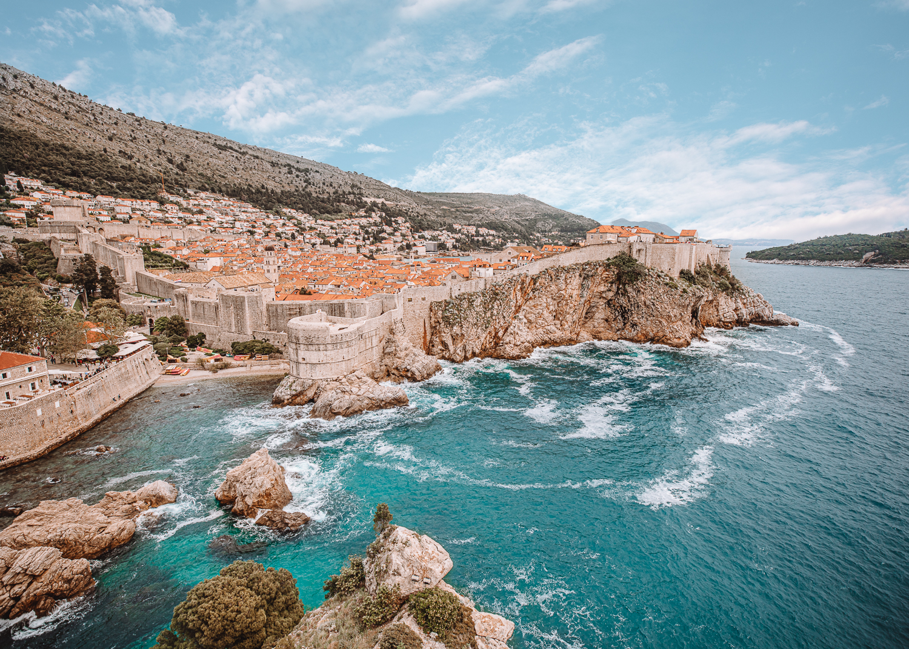

Where is Croatia?
Where are Split and Dubrovnik located?
Croatia (or Hrvatska in local language) lies along the sultry Adriatic Sea, sharing a border with Hungary, Slovenia and Bosnia and Herzegovina. The local currency is Kuna (HRK), a less cool cousin of Euro. PS: 1 Kuna = 0.13 Euro.
Split and Dubrovnik are in Dalmatia, one of the four historical regions in Southern Croatia. Dubrovnik is King’s Landing from Game of Thrones, for the uninitiated. Split is the second largest city (after the capital, Zagreb) and the busiest port in Croatia. They both draw in a flock of migrating tourists in the high season of July and August.
Split is a Venetian wonder, sprinkled with Croatian and Roman civilizations. Dubrovnik is the peak of the Adriatic essence. It’d need another post to cover what are the top things to do in Dubrovnik and Split. We’ll leave that out for now. But know both cities are worth your time (and money) as you see an ancient civilization borne out of romance between nature and mankind.
There are two routes to travel by car between Split and Dubrovnik: Either via E65 then getting onto D8 (the Adriatic Coastal Road) or sticking with E65 which goes through the inland. The first route is 229 km (140 miles) long and the second one 257 km (158 miles). The first is an exhilarating ride and the second a safe one. TIP: Both routes have tolls and require you to cross a 20 km (12 miles) stretch in Bosnia and Herzegovina (another country) before re-entering Croatia. So, carry your passport irrespective of your nationality.
LATEST FROM G&P

Once time in Croatia

Bangkok

Bangkok food